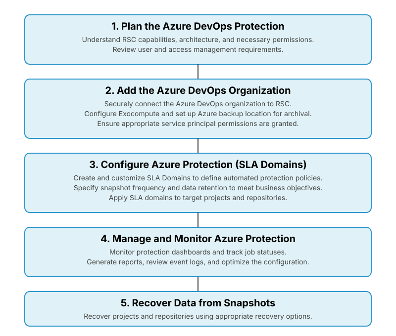

High-level implementation workflow for Azure DevOps
The Azure DevOps protection implementation workflow involves a structured approach to secure data management, starting with planning and preparation, followed by Azure DevOps organization setup, Azure DevOps protection, continuous management and optimization, and repository recovery.

The Azure DevOps protection workflow is a structured process designed to secure data
management. It moves sequentially through planning, organization setup, protection
configuration, continuous management, and repository recovery.
- Plan your Azure DevOps protection: This foundational phase involves understanding the capabilities of RSC for Azure DevOps protection, including its key features, common terminology, and high-level architecture. Organizations plan user and access management within RSC for Azure DevOps and carefully review all necessary permissions that RSC requires in the Azure DevOps organization for data protection.
- Set up Azure DevOps organization: This phase focuses on securely connecting RSC to the Microsoft Azure DevOps organization. It involves learning about the permissions and adding the Azure DevOps organization to RSC. In this phase, you configure the underlying Rubrik components within Azure DevOps. This includes setting up Exocompute on Azure DevOps, which provides scalable compute resources for backup and recovery. Additionally, you configure Azure backup location to store Azure DevOps snapshots.
- Configure Azure protection: This phase is dedicated to defining how data will be protected. You create a custom SLA Domain to automatically protect Azure DevOps organization according to business objectives, specifying snapshot frequency, and retention.
- Manage Azure DevOps organization: This phase involves ongoing oversight and refinement. You monitor Azure DevOps Inventory page to track backup job statuses and data changes, generate reports for auditing and data management planning, and review event logs for all protection activities. This stage also includes resolving any issues and continuously optimizing the configuration for efficiency and compliance.
- Azure DevOps recovery: After completing the protection setup for your Azure DevOps organizations, RSC starts protecting your data by taking snapshots based on the configured policies in the assigned SLA Domains. You can recover the projects and repositories from these snapshots.